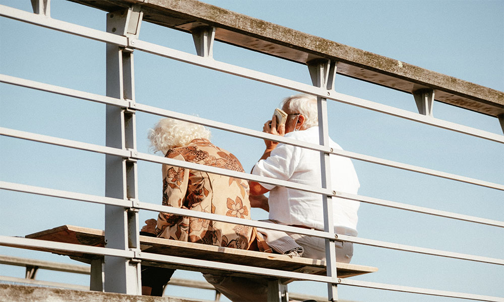

Man is what he believes.
사람은 스스로 믿는 대로 된다.
Man is what he believes.
사람은 스스로 믿는 대로 된다.
마우스 이펙트 - 마우스 방향에 따라 움직이기
<div class="moveWrap">
<article class="moveImage">
<div class="mImg"><img src="../assets/img/bg5.jpg" alt="이미지">
<div class="mText">
<p>Man is what he believes.</p>
<p>사람은 스스로 믿는 대로 된다.</p>
</div>
</div>
</article>
</div>
<div class="info left list">
<ul>
<li>pageX : <span class="pageX">0</span></li>
<li>pageY : <span class="pageY">0</span></li>
<li>standardX : <span class="standardX">0</span></li>
<li>standardY : <span class="standardY">0</span></li>
<li>maxX : <span class="maxX">0</span></li>
<li>maxY : <span class="maxY">0</span></li>
<li>angelX : <span class="angelX">0</span></li>
<li>angelY : <span class="angelY">0</span></li>
</ul>
</div>
body {
cursor: none;
width: 100%;
height: 100vh;
overflow: hidden;
}
.moveWrap {
width: 100%;
height: 100vh;
overflow: hidden;
}
.moveImage {
position: absolute;
left: 50%; top: 50%;
transform: translate(-50%, -50%) perspective(600px) rotateX(0deg) rotateY(0deg);
transform-style: preserve-3d;
will-change: transform;
transition: all 0.2s;
}
.moveImage .mImg::before {
content: '';
position: absolute;
left: 5%; bottom: -3%;
width: 90%; height: 40px;
background: url(../assets/img/bg5.jpg) no-repeat;
background-size: 100% 30px;
filter: blur(15px);
z-index: -1;
opacity: 0.9;
}
.moveImage .mImg {
width: 50vw;
}
.moveImage .mImg img {
width: 100%;
border-radius: 5px;
}
.moveImage .mImg .mText {
font-family: "S-CoreDream";
position: absolute;
left: 50%;
top: 50%;
transform: translate3d(-50%, -50%, 150px);
text-align: center;
color: #fff;
background: rgba(0,0,0,.3);
padding: 2vw;
font-size: 1.2vw;
line-height: 1.5;
white-space: nowrap;
border-radius: 5px;
}
.cursor {
position: absolute;
width: 10px;
height: 10px;
background: #fff;
border-radius: 50%;
z-index: 10000;
user-select: none;
pointer-events: none;
}
$(window).mousemove(function(e){
let pageX = e.pageX;
let pageY = e.pageY;
//기준점 가운데로 변경(마우스 좌표값)
let standardX = $(window).width()/2 - pageX; //브라우저의 너비값 / 2
let standardY = $(window).height()/2 - pageY; //브라우저의 높이값 / 2
// //최대값, 최소값 설정
// if(standardX >= 50) standardX = 50;
// if(standardX <= -50) standardX = -50;
// if(standardY >= 50) standardY = 50;
// if(standardY <= -50) standardY = -50;
//최소값은 -100, 최대값은 100 설정
let maxX = Math.max(-100, Math.min(100, standardX));
let maxY = Math.max(-100, Math.min(100, standardY));
//각도를 줄이는 설정
let angelX = maxX * 0.15;
let angelY = maxY * 0.15;
//부드럽게 설정
let softX = 0;
let softY = 0;
softX += (angelX - softX) * 0.5; //수치를 곱한 것을 softX에 누적
softY += (angelY - softY) * 0.5;
//이미지
$(".moveImage").css({"transform": "translate(-50%, -50%) perspective(600px) rotateX("+ -softY +"deg) rotateY("+ -softX +"deg)"});
//커서
gsap.to(".cursor", {duration: .3, left: pageX, top: pageY});
//출력
$(".pageX").text(pageX);
$(".pageY").text(pageY);
$(".standardX").text(standardX);
$(".standardY").text(standardY);
$(".maxX").text(maxX);
$(".maxY").text(maxY);
$(".angelX").text(parseInt(angelX));
$(".angelY").text(parseInt(angelY));
});